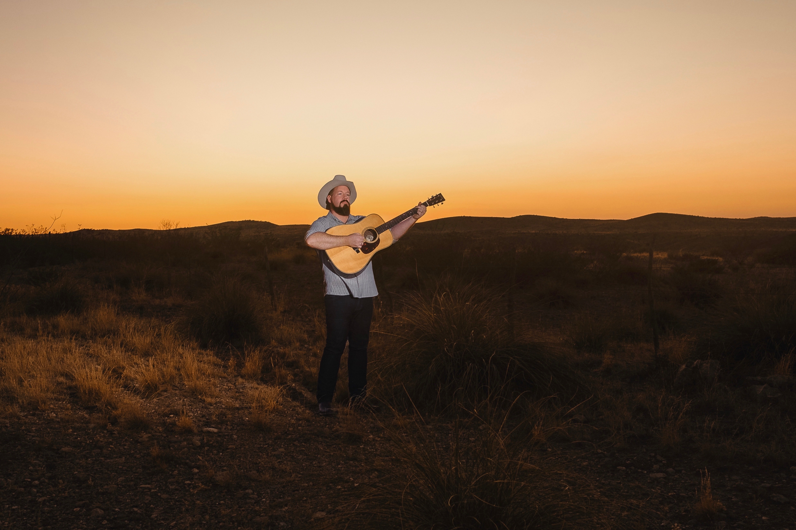
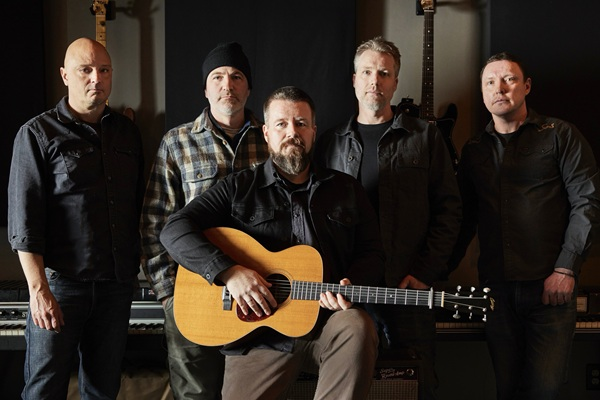

New single “Stuck” is out now — featuring Charlie Marie on duet vocals and Mickey Raphael (Willie Nelson, Chris Stapleton) on harmonica. Apple Music · Spotify · Amazon Music
The Man Behind The Music

“My focus isn’t on limiting a record to fit into a specific bin on a store shelf — it’s to tell a story.”
Daniel Miller is a singer-songwriter with a penchant for centering his music on the locales that inspire him. Born and raised in Knoxville, TN and now living near Boston, MA, he’s spent twenty years writing songs from the road.
His newest album — the first billed under the full band name Daniel Miller & The High Life 
Daniel has opened for Jamey Johnson, Chris Knight, American Aquarium, The Old 97’s, The Mavericks, Lukas Nelson, and many more, in some of America’s most beloved venues. He's spent the past twenty five years writing songs from the road.
On The Road
BOOKINGS & INQUIRIES